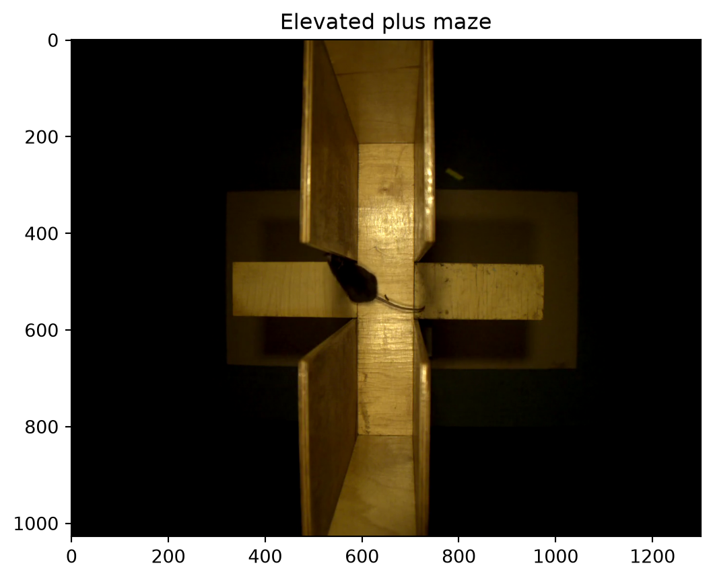
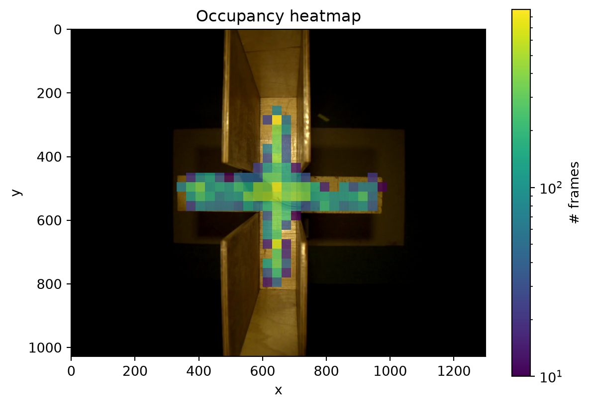
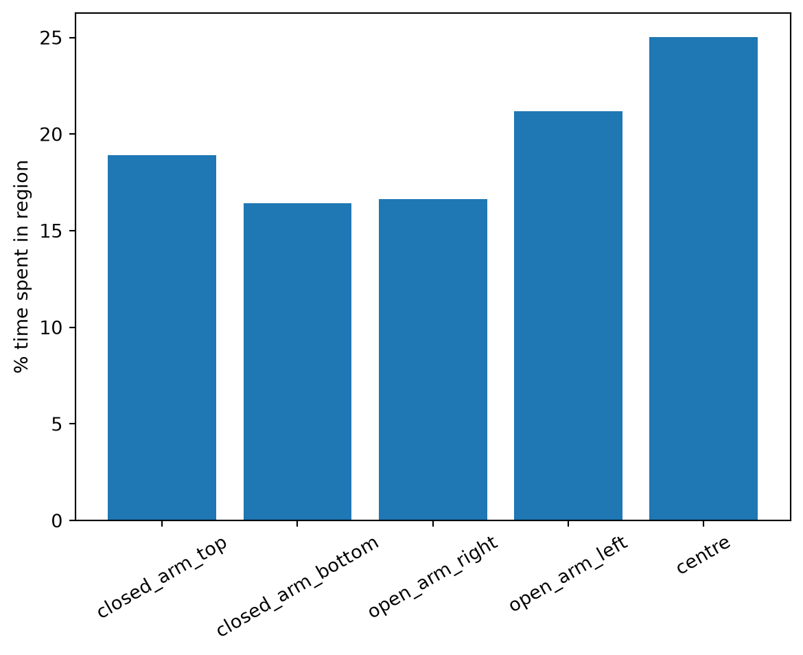

In this case study, we’ll use movement to analyse a mouse navigating an elevated plus maze (EPM)—a widely used behavioural assay for measuring anxiety in rodents. Our goal is to quantify how much time the mouse spends in different regions of the maze.
If you are following along this chapter on your own computer, make sure to run all code snippets with the animals-in-motion-env environment activated (see prerequisites A.3.3). This also applies to launching the movement GUI (Section 4.2).
5.1 The elevated plus maze
The EPM is a simple maze in the shape of a plus sign, raised on a platform above the ground. It consists of four arms radiating from a central square: two opposite “open arms” (corridors without walls) and two opposite “closed arms” (corridors enclosed by walls). Mice are generally averse to open, exposed spaces, so they tend to prefer the closed arms. The proportion of time spent in the open arms is therefore commonly used as a measure of anxiety-like behaviour: mice that spend more time exploring the open arms are interpreted as exhibiting lower anxiety.
5.2 Dataset
This tutorial uses one of movement’s sample datasets: DLC_single-mouse_EPM.predictions.h5. The dataset consists of DeepLabCut pose‑tracking predictions for a single mouse performing an elevated plus maze task. The recording is approximately 10 minutes long at 30 fps and includes eight tracked keypoints, along with the corresponding video and a representative still frame.
import matplotlib.pyplot as pltimport numpy as npfrom movement import sample_datafrom movement.filtering import filter_by_confidence, rolling_filterfrom movement.plots import plot_occupancyfrom movement.roi import compute_region_occupancy, load_rois
Downloading data from 'https://gin.g-node.org/neuroinformatics/movement-test-data/raw/master/metadata.yaml' to file '/home/runner/.movement/data/temp_metadata.yaml'.
In Chapter 4 we loaded pose tracks from a file on disk using movement’s load_dataset function. Here, we will fetch the EPM dataset directly using movement’s sample_data.fetch_dataset function, since it’s one of movement’s curated sample datasets, which are downloaded on demand and cached under ~/.movement/data. We will also pass with_video=True so that the associated video is downloaded as well—we’ll need it later.
Downloading file 'frames/single-mouse_EPM_frame-20sec.png' from 'https://gin.g-node.org/neuroinformatics/movement-test-data/raw/master/frames/single-mouse_EPM_frame-20sec.png' to '/home/runner/.movement/data'.
Downloading file 'videos/single-mouse_EPM_video.mp4' from 'https://gin.g-node.org/neuroinformatics/movement-test-data/raw/master/videos/single-mouse_EPM_video.mp4' to '/home/runner/.movement/data'.
Downloading file 'poses/DLC_single-mouse_EPM.predictions.h5' from 'https://gin.g-node.org/neuroinformatics/movement-test-data/raw/master/poses/DLC_single-mouse_EPM.predictions.h5' to '/home/runner/.movement/data'.
Along with the pose tracks, this sample dataset comes with a video and a still frame extracted from it. Their paths are stored as attributes of the dataset:
Take note of these paths—we’ll need them to later draw regions of interest in the GUI.
Let’s also look at the still frame to visualise the maze configuration used in this dataset:
frame = plt.imread(ds.frame_path)fig, ax = plt.subplots()ax.imshow(frame)ax.set_title("Elevated plus maze")plt.show()

Figure 5.1: A still frame from the video, showing the elevated plus maze from above.
The camera looks down on the maze from above. The two closed arms run vertically, while the two open arms are the bare horizontal platforms extending left and right from the central square.
5.4 Clean the data
Pose estimation output inevitably contains low-confidence or erroneous predictions, especially around occluded body parts. This is also true for our dataset, so some preprocessing is required before we proceed with the analysis.
We saw an example of how to clean the data in Chapter 4. This time we will implement the cleaning steps ourselves.
TipExercise 5.1
Clean the pose tracks:
Discard predictions with a confidence score below 0.95, using filter_by_confidence. Which keypoint loses the most data? Does that make sense given the geometry of the maze?
Smooth the result with a rolling median filter, using rolling_filter and a window of length 5 frames. Set min_periods=2, so that a smoothed value is produced whenever at least 2 of the 5 frames in the window are present (rather than requiring all 5).
Name the resulting cleaned position array position_clean—we’ll use it for the rest of the chapter.
5.5 Visualise space occupancy
Before defining any regions of interest, it’s useful to examine the mouse’s overall occupancy to understand how it explored the maze.
In Chapter 4, we relied on xarray’s built-in plotting methods. The movement.plots module provides additional plotting functions designed specifically for motion-tracking data. Among them is plot_occupancy, which by default produces a 2D histogram of position based on the centroid of all keypoints.
NoteMultiple individuals
If the dataset contains more than one individual, plot_occupancy pools the centroid positions of all individuals by default when computing the histogram. To restrict the plot to specific individuals, supply the individuals argument (and keypoints to control which keypoints are used for the centroid).
We’ll overlay the histogram on the still frame that came with the dataset, so we can see the maze geometry underneath.
Code
frame = plt.imread(ds.frame_path)height, width = frame.shape[:2]# Bins of 30x30 pixels, covering the whole framebin_size =30bins = [ np.arange(0, width + bin_size, bin_size), np.arange(0, height + bin_size, bin_size),]fig, ax = plt.subplots()ax.imshow(frame)plot_occupancy( position_clean, ax=ax, bins=bins, alpha=0.8, cmin=10, # hide bins with fewer than 10 frames norm="log",)# Match the axes to the frame, keeping the image orientationax.set_xlim(0, width)ax.set_ylim(height, 0)ax.set_title("Occupancy heatmap")ax.collections[0].colorbar.set_label("# frames")

Figure 5.2: Occupancy of the mouse’s centroid across the maze, on a logarithmic colour scale.
Aside from individuals, keypoints and ax, all remaining keyword arguments are forwarded to matplotlib’s hist2d, which provides the bins, cmin and norm parameters. A logarithmic colour scale is recommended in this context, as the most frequently visited bins otherwise compress the dynamic range and obscure structure in the less‑visited regions.
The trajectories reflect the plus-shaped layout of the maze, with the centre appearing as one of the most visited regions. To quantify occupancy within particular regions in further detail, we must first define these regions explicitly.
5.6 Define ROIs in napari
A region of interest (ROI) is a shape defined in the same pixel coordinates as the tracking data. By combining ROIs with pose tracks, we can relate the animal’s position to meaningful areas of the camera view, and answer questions such as whether the mouse was inside a given arm of the maze at a given time.
The easiest way to define a region of interest is using the movement GUI (see Section 4.2 if you need a refresher).
TipExercise 5.2
Draw the regions of the maze in the GUI and save them to a file.
The steps below are a condensed version of the define regions of interest section of the movement GUI guide. You can refer to the guide for the more detailed steps.
Launch the GUI from the command line with movement launch.
Load a background layer: drag and drop either the video or the still frame onto the viewer, using the paths we printed above.
Expand the “Define regions of interest” menu on the right-hand side, and click “Add new layer”. This adds a napari shapes layer named “regions”, managed by movement.
With that layer selected, press P to activate the polygon tool and draw around one region of the maze, clicking once per vertex. Each shape you draw appears as a row in the regions table.
Repeat until you have five regions: the two open arms (left and right), the two closed arms (top and bottom), and the central square.
Double click the name cell of each row to rename it. We’ll use open_arm_left, open_arm_right, closed_arm_top, closed_arm_bottom and centre.
Click “Save layer” and save the regions to a .geojson file.
Notenapari shapes and movement regions
Any napari shape can become a movement region, but the resulting object in movement depends on what you drew: polygons, rectangles and ellipses become PolygonOfInterest objects, while lines and paths become LineOfInterest objects. The latter are useful for boundaries an animal may cross, rather than areas it may occupy.
5.7 Load and visualise ROIs
We can now read the regions we defined in the GUI into Python with load_rois.
For reproducibility, we’ll use the EPM_rois.geojson file provided in the course materials. You may also use your own geojson file created in Section 5.6; the results should be comparable.
rois = load_rois("data/EPM_rois.geojson")[roi.name for roi in rois]
Additionally, every region can draw itself onto a matplotlib axes with its plot method. This is very helpful to double check that our regions line up with the maze.
To determine whether the mouse was inside a region of interest, we first need to define what “being in a region” means. The simplest approach is to reduce the mouse to a single representative point.Other definitions are possible—for example, checking whether any keypoint lies inside a region, or what fraction of keypoints do—but using a single point is straightforward, and we adopt that convention here.
For this representative point, we’ll use the centroid across all keypoints, computed as in Chapter 4.
centroid = position_clean.mean(dim="keypoint")
We can now compute the occupancy in each of the ROIs we defined, by passing the centroid and the regions to compute_region_occupancy.
If you inspect the output closely, you will notice the output array mirrors the input centroid array, except that the space dimension has been replaced by a region dimension whose coordinates are the region names defined in the GUI. You will also notice the output occupancy is a boolean array: True when the centroid lies inside a given region at a given time, and False otherwise.
We can use the occupancy boolean array to directly compute the proportion of time spent in each region, by summing over time and dividing by the number of frames.
time_per_region =100* occupancy.mean("time")time_per_region = time_per_region.squeeze() # drop the single-individual dimfig, ax = plt.subplots()ax.bar(time_per_region.region.values, time_per_region.values)ax.set_ylabel("% time spent in region")ax.tick_params(axis="x", rotation=30)

Figure 5.4: Percentage of the session the mouse’s centroid spent in each region.
Tipmean instead of sum and divide
Here taking the mean over time is the same as summing over time and dividing by the number of frames: occupancy.mean("time") is equivalent to occupancy.sum("time") / occupancy.sizes["time"]. But this equivalence holds here because occupancy is a boolean array, which cannot contain NaN values.
Be careful when applying the same shortcut to floating-point data: xarray’s mean ignores NaN values by default, so they are dropped from both the sum and the count. The denominator is then the number of valid frames rather than the total number of frames.
We can see that the mouse spent a comparable amount of time in the open and closed arms, and a sizeable fraction of the session in the centre.
NoteWhy don’t the percentages add up to 100%?
If you inspect time_per_region, you may notice the percentages don’t add up to 100%.
print(f"Accounted for: {float(time_per_region.sum()):.1f}% of frames")
Accounted for: 98.2% of frames
The denominator is the total number of frames, but not every frame is counted in some region. A frame contributes to no region at all if the centroid is NaN (position missing after cleaning), or if it falls in a part of the arena we didn’t cover with a region.
TipExercise 5.3
As discussed, the centroid is not the only way to represent the overall position of the mouse.
Recompute the occupancy using only the tailbase keypoint in place of the centroid, and plot the resulting percentages alongside those obtained from the centroid.
How do occupancy times change? Can you infer why?
5.9 Counting entries and exits
The time spent in a region is an aggregate metric across the entire session. To understand how this dwell time accumulated over the course of the session, the number of entries into each region offers a useful complementary measure—one that can be extracted almost trivially from the boolean occupancy array.
If we compute the consecutive differences of the occupancy array along the time dimension, we get an array that identifies, for each frame, whether it corresponds to an entry (1), an exit (-1), or neither (0). We can then count the number of entries and exits per region by summing over time.
transitions = occupancy.astype(int).diff(dim="time")entries = (transitions ==1).sum("time").squeeze()exits = (transitions ==-1).sum("time").squeeze()for region in entries.region.values:print(f"{region:<20} "f"entries: {int(entries.sel(region=region)):>4} "f"exits: {int(exits.sel(region=region)):>4}" )
Entries and exits are almost perfectly balanced for each region, which provides a useful consistency check: over the course of a session, every entry into a region must be paired with a subsequent exit, and every exit must correspond to a prior entry. Only the first and last frames can violate this pairing: an initial exit without a matching entry occurs if the mouse begins the session inside a region, and a final entry without a matching exit occurs if the mouse ends the session inside a region. So the two counts should either be identical, or differ by exactly one in these boundary cases. Any larger discrepancy indicates a problem in how we derived the transitions.
The centre is entered far more often than the arms, reflecting the typical pattern in which the mouse probes an arm briefly and then retreats back to the centre.
NoteSpurious entries and exits
This simple countis subject to a few spurious effects.
One arises from missing data: The centroid becomes NaN wherever the position could not be recovered after cleaning, and compute_region_occupancy marks those frames as False. A tracking gap that occurs while the mouse is clearly inside a region will therefore appear as a brief exit followed by a re-entry.
Another arises from boundary jitter: small fluctuations of the centroid around a region boundary generate an entry and an exit for every crossing.
Importantly, neither effect disrupts the entry–exit balance discussed above, since both introduce transitions in matched pairs. To mitigate these artefacts, we could discard visits shorter than a chosen minimum duration and handle gaps explicitly rather than counting them as time spent outside.
No missing points (marked as NaN) in input.
Missing points (marked as NaN) in output:
keypoint snout left_ear right_ear centre lateral_left lateral_right tailbase tail_end
individual
individual_0 4728/18485 (25.58%) 1671/18485 (9.04%) 1819/18485 (9.84%) 373/18485 (2.02%) 3795/18485 (20.53%) 3443/18485 (18.63%) 1478/18485 (8.0%) 3885/18485 (21.02%)
The snout keypoint shows the highest number of dropped samples, with tail_end following closely. This makes sense: the mouse’s snout is often occluded by its head when it pitches forward, and the tail end is a fine feature that can be challenging to resolve against the background.
You can compare your geojson file with the set of regions we prepared earlier: EPM_rois.geojson. Since drawing regions is a manual task, there will be differences. To see how the boundaries compare, you can load both files into the GUI with “Load layer”.
Time spent in each region, using the centroid or the tailbase to represent the mouse.
The time spent in the centre region increases when using the tailbase keypoint rather than the centroid, whereas the time spent in the open arms decreases. The closed arms show less variation.
This makes sense: the tailbase trails behind the mouse, so it is still in the centre while the snout and the rest of the keypoints in the body have already entered an arm. And the effect is strongest for the open arms, which the mouse tends to enter only partway before turning back.
Note as well that the tailbase accounts for noticeably fewer frames:
The centroid is the average of up to 8 keypoints and is only NaN when all of them are missing, whereas a single tailbase keypoint missing makes that frame unusable.